22 November 2026 · Demo and configured local profiles. Priorities reflect impact on choosing, solving, and reviewing competitive programming problems.
The strongest action is Add links. Five problems fit in the initial 1280 × 720 viewport. Counting Rooms repeats Graph Algorithms and CSES across three cells. Give the top eligible problem an Open problem action, move Add links to a secondary position, and reserve the reason column for information the other columns do not convey. Label CSES percentages as relative solver counts. A percentage of the most-solved task is difficult to interpret as difficulty.
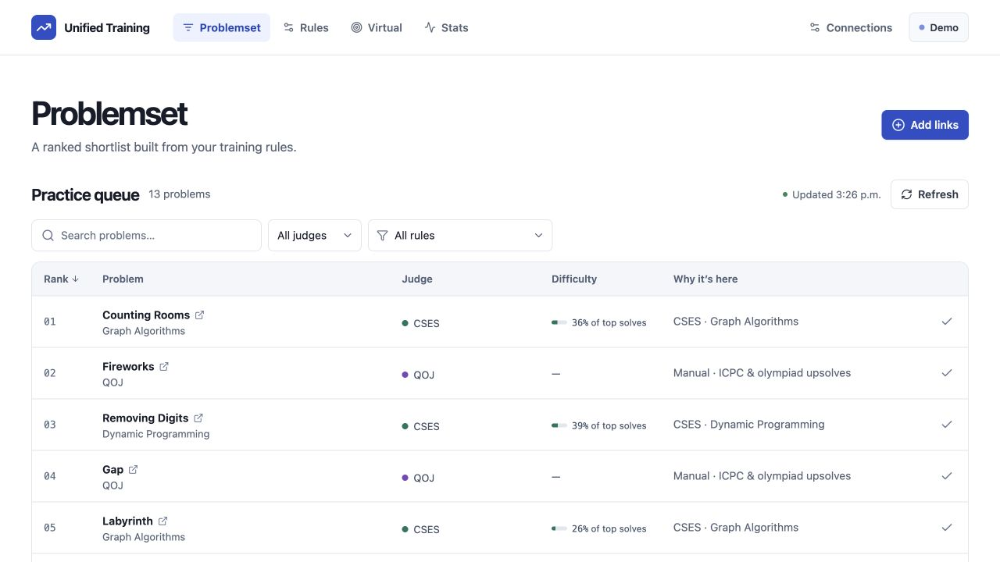
ABC grind and ARC grind are both enabled while their rating baseline reads “Official rating unavailable.” The first section sends the user to another page to edit contest eligibility. Start with enabled rules, show their matching counts, and surface missing prerequisites beside the rule. Group inactive templates under Add rule and keep contest eligibility in Virtual.
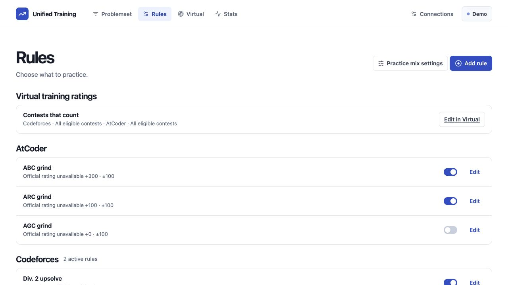
The strongest explanation of the demo queue is at the bottom of Practice mix settings. The next 13 problems consist of 10 CSES and 3 manual entries. Put that summary on Rules, link it to the queue, and retain detailed weights in the mix editor. Distinguish eligible matches from actual slots allocated.
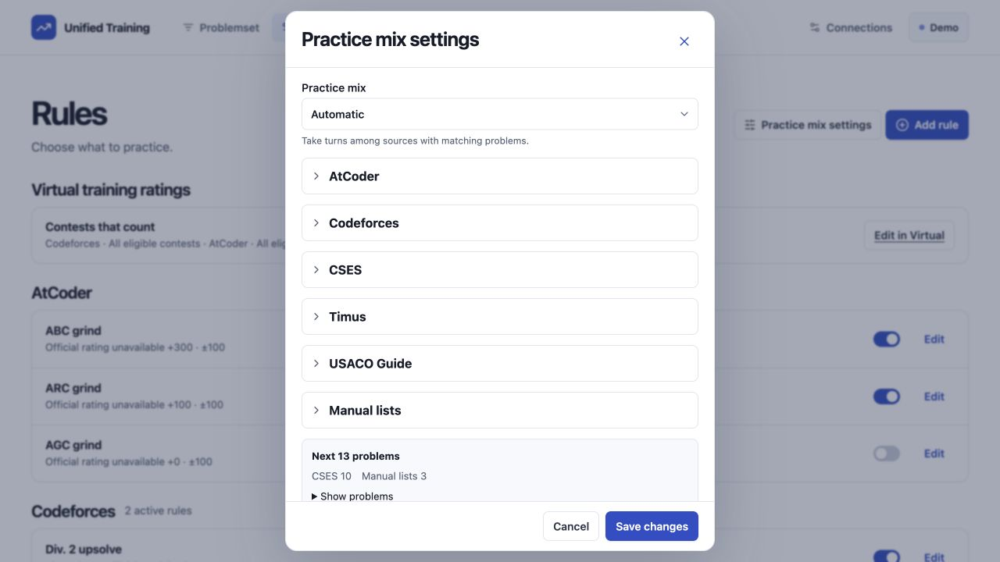
Among 1,684 problems, the first tools are five filter menus and a status selector. There is no title search. Fence Painting lists four curriculum placements inline and gets the same checkmark motif as an already-solved row. Add title search, show the relevant module first with a disclosure for other placements, and give completed rows a distinct Solved label. Link the catalog from Problemset as well as Rules.
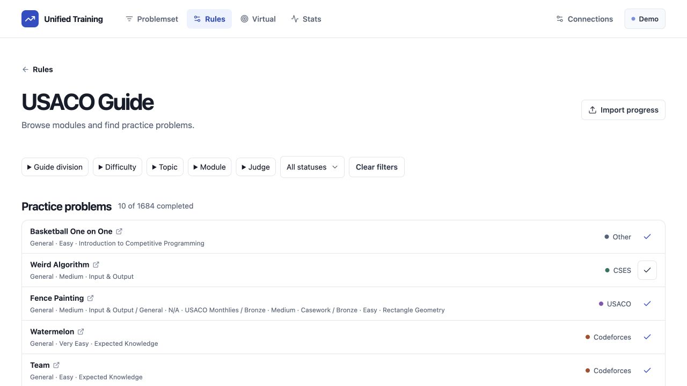
Both judges show two Unavailable values. The default demo offers a disabled import, and the text sends the user to their local profile. Give the demo one clearly labeled sample contest, or replace the empty metrics with a direct Set up my contests action.
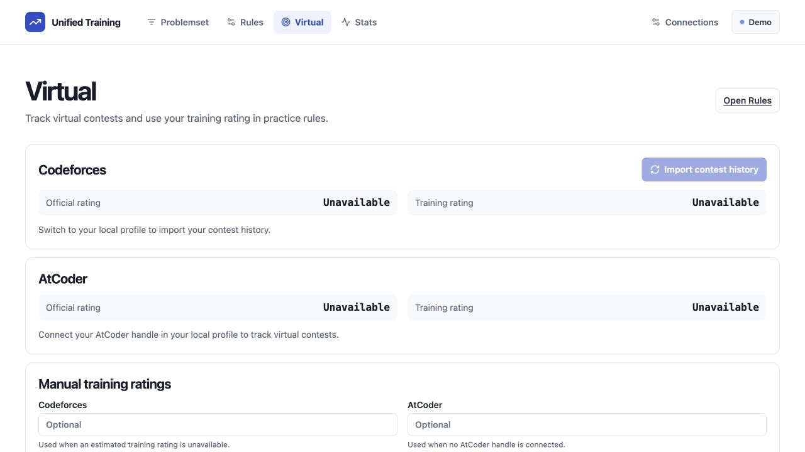
All-time totals, streaks, and weekly activity are legible. This week’s solve count appears in the summary and the chart. Two header buttons customize appearance. Consolidate appearance settings and give the weekly summary an action to inspect the problems behind it. Preserve the existing keyboard-operable activity calendar.
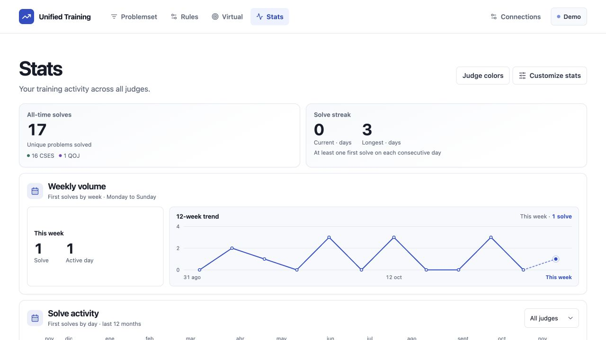
Selecting My local profile opens Connections even for a configured profile. Handle editing, per-judge refresh, verification, imports, and timezone share the form. Switching into an importer unmounts the connection draft. Return configured profiles directly to the current task. Give each judge a saved connection state and preserve edits when opening imports.
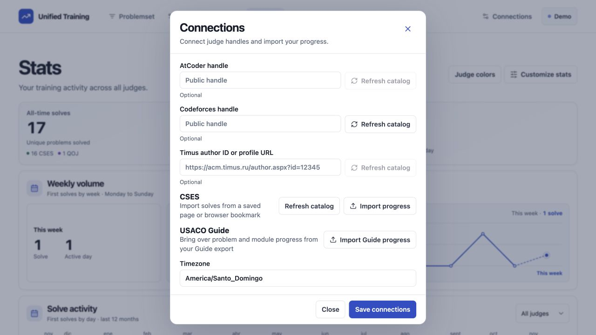
A plain checkmark opens a second dialog to save today’s prefilled date. On the Guide, visually similar checks can mean record a solve or inspect an existing one. Use Log solve for an unsolved problem and Solved for completed ones. For manual records, save today immediately with Undo and Edit date. Preserve the separate pending and confirmed states for AtCoder claims.
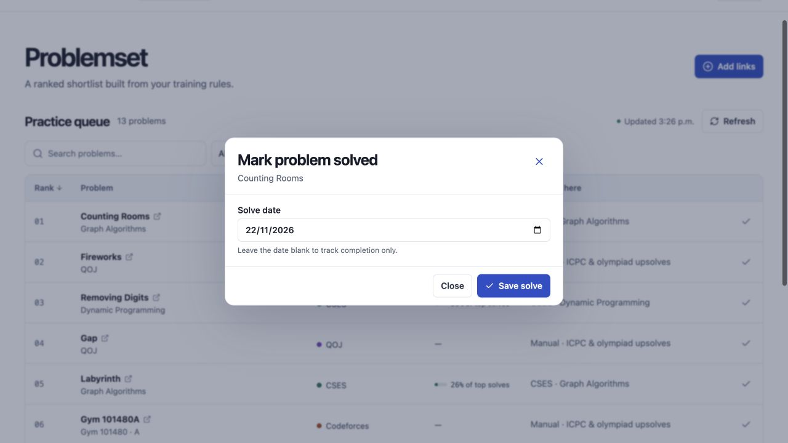
A single recognized QOJ link defaults to Create a new list, even with an existing upsolve list. Give a single pasted problem a default destination such as Inbox or the last-used list. Keep the editable preview for mixed bulk input, ambiguous titles, and invalid links.
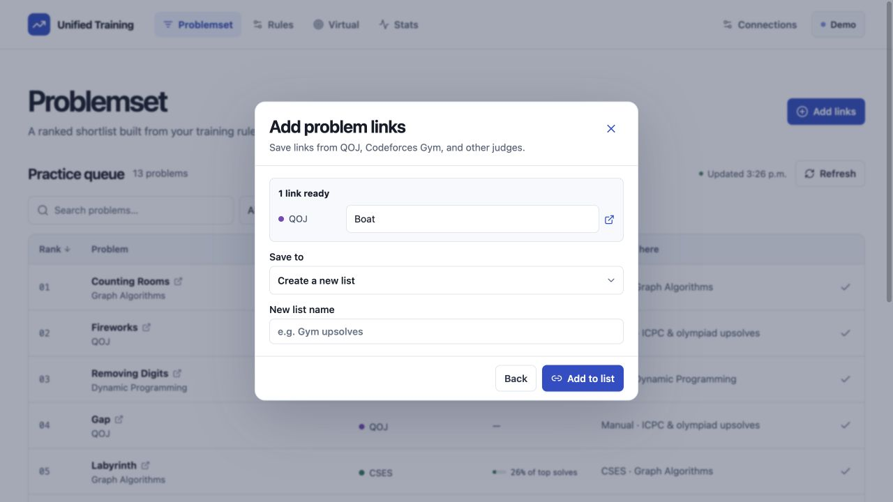
At the 440 px window-width check, the layout stacks judge, difficulty, section and reason below the title. Preserve the visible check action while shortening repeated metadata. In split view, prioritize contest ID, task letter, difficulty and one useful reason. The browser capture is scaled and does not establish physical text size in the native window.
The file picker follows detailed instructions for several browsers. Lead with the drop target for HTML or exported JSON and put the browser-specific guide behind How to save the CSES page. The extension already names the exported file and reports the count. Include the import destination in its success action.
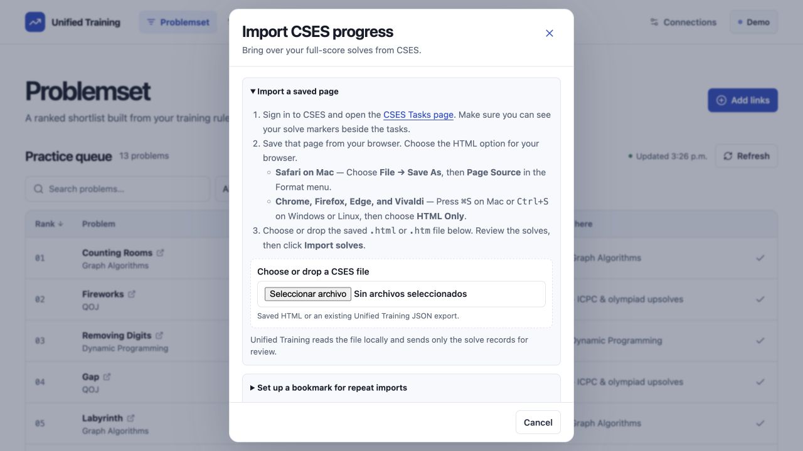
The local profile contains 82 shortlist entries. Search, judge, rule and page are component state, so visiting Rules and coming back resets the working set. Preserve those values in the route or per-profile session. The global Updated time uses the newest successful sync from any judge and displays only the time of day. Label the source and include the day when older than today.
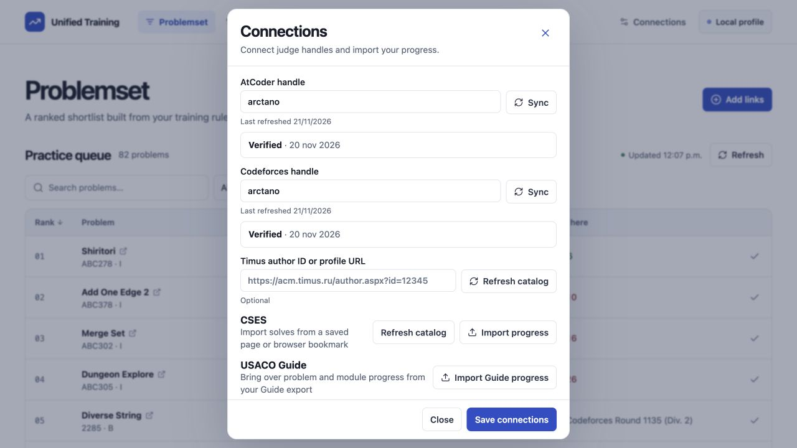
In the configured profile the full first viewport goes to Codeforces ratings and history. The AtCoder scheduling form follows the Codeforces history section, including its expanded table. Add an AtCoder/Codeforces selector and elevate Schedule a virtual or the current attempt on AtCoder. Keep charts and history immediately below the active task.
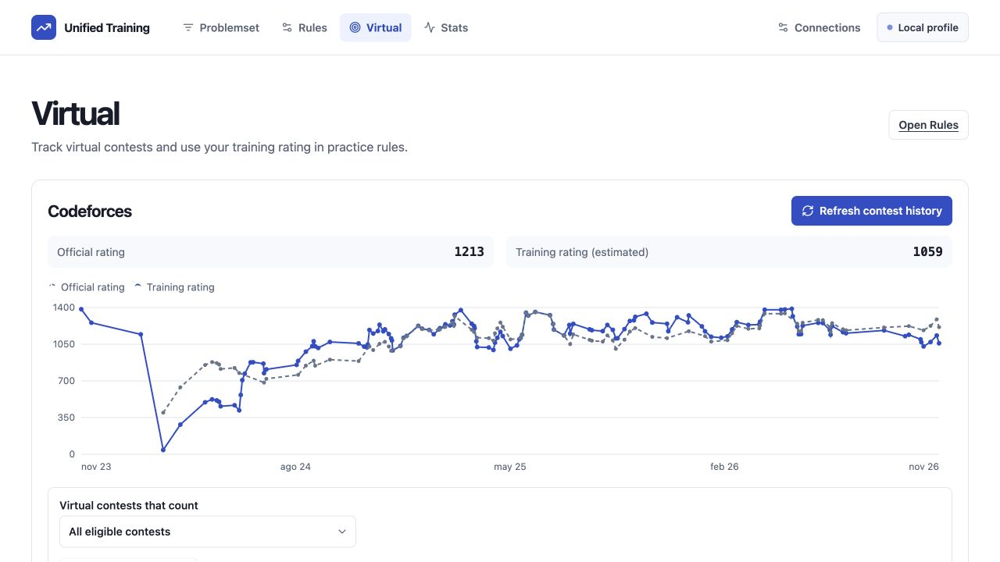
The skip link changes the route hash to #main-content. The route parser maps that hash to Problemset, taking a keyboard user away from Rules, Virtual or Stats. Focus main directly and preserve the current route. Give repeated Edit buttons the name of the rule they edit.
The macOS launcher binds Command-R to rebuilding the engine and frontend and restarting the server. Give ordinary reload and rebuild distinct commands to protect training sessions from unnecessary interruption. The Swift launcher and Chrome extension were reviewed in source. Live judge verification, contest submission, extension execution, and assistive-technology behavior were outside the exercised paths.